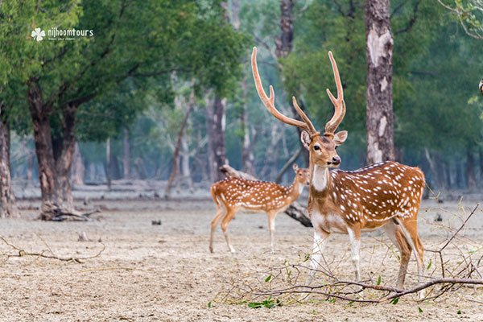

1. Sundarbans Mangrove Forest
Sundarbans is the largest mangrove forest on earth and a UNESCO world heritage site. Sundarbans is located in between two neighboring countries – Bangladesh and India. The majority of the forest is located in Bangladesh. It is home to the last remaining Bengal tigers in the world and much other wildlife. The environment of Sundarbans is tranquilizing and visiting this forest could be a once in a lifetime experience. That is why Sundarbans come as number one on our list of the best places to visit in Bangladesh.
2. Chittagong Hill-Tracts

Chittagong Hill-Tracts area is a naturally beautiful place full of beautiful hills. It is home to many tribal groups of Bangladesh. This is the best place in Bangladesh for adventure travel. You can trek deep inside the hills for many days here if you can manage permission from the local authority. Also, you can meet different tribal groups in this region and see their lifestyle. The most beautiful river in Bangladesh called Sangu river is located in this area. A boat ride in Sangu during monsoon could be a great experience. Chittagong hill-tracts comes as number two on our list of the best places to visit in Bangladesh.
3. Srimangal

Srimangal is the tea capital of Bangladesh, located in the north-eastern part of the country. You’ll find lush green tea gardens anywhere you go here. This is one of the few places in the country where if you look around, you may not find any other people anywhere except you. A really nice and calm place. Cycling through the trails inside the tea plantations here could be one of the best things you can do in Bangladesh. Also worth visiting is the Lawachhara National Park, and trek to Hamham waterfalls. You can easily spend a few days here with nature. Srimangal comes as number three on our list of the best places to visit in Bangladesh.
4. Rangamati

Rangamti is a district of the Chittagong Hill-Tracts area. The main reason to visit this place is the Kaptai Lake. It is a naturally beautiful man-made lake surrounded by beautiful hills. The best thing to do at Rangamati is to enjoy a boat ride on the Kaptai Lake for the whole day. Rangamati is also home to many tribal groups. You can visit their handicraft market here to buy some fine quality handmade fabrics. There is a Buddhist monastery called Rajban Bihara which is also worth visiting. Rangamati comes as number four on our list of the best places to visit in Bangladesh.